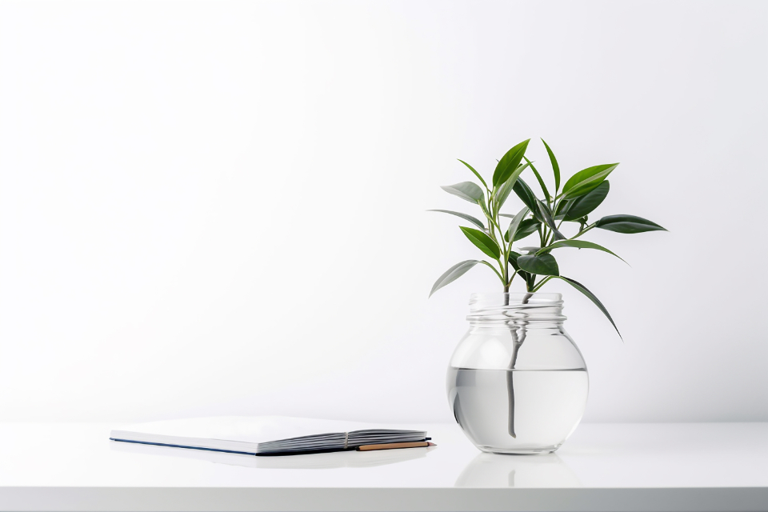
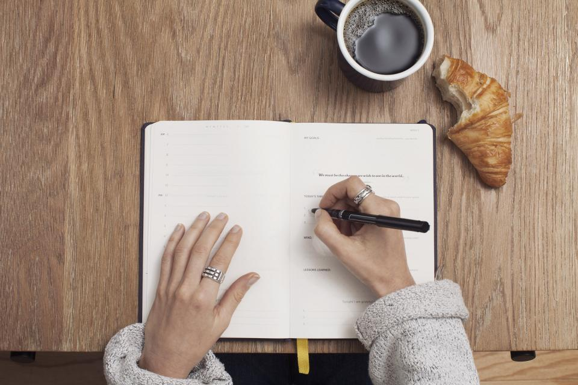

The app
Everything happens on this page
Pick a mode, set a task as your current focus, and press Start. The ring counts down, a soft chime marks the end of the session, and today’s stats update as you go.
Pomodoro timer
25:00
Time to focus
Keyboard shortcuts
- Space
- Start / pause
- R
- Reset timer
- 123
- Switch mode
Today’s tasks
No tasks yet. Add one above, then set it as your current focus so completed pomodoros count toward it.
How it works
Three steps, repeated
The whole loop fits on one screen. Nothing to configure first — you can start the timer before you have a single task.
-
Write it down
Add the tasks for your day and give each one a rough size in pomodoros — the estimate is a plan, not a promise.
-
Start the ring
Mark one task as your current focus and press Start (or tap Space). The ring counts down a 25-minute session against the clock.
-
Take the break it suggests
When a session ends, a soft chime sounds and the timer queues a short break — or a longer one after every fourth session.


Background reading
Why the pomodoro technique?
Francesco Cirillo devised the method in the late 1980s, timing his study sessions with a tomato-shaped mechanical kitchen timer. Pomodoro is Italian for tomato, and the name stuck.
The technique’s convention is a fixed unit of attention: roughly 25 minutes of single-task focus, a short break, and a longer break after about four of those units. It is worth saying plainly — the 25/5 rhythm is the technique’s convention, not a measured, proven productivity result.
What the convention does offer is a low-stakes way to start. A quarter of an hour feels small enough to begin now, the timer lets you stop negotiating with yourself mid-task, and the forced breaks make stopping at the end of a session easier than grinding to a halt. Focus Flow follows that same convention, with the numbers left at the defaults so you can hear whether it suits you.
Under the hood
What this little app actually does
No dashboards, no streak badges, no invented numbers — just the mechanics of a pomodoro day, done carefully.
-
Three timed modes
Focus runs 25 minutes, a short break 5 and a long break 15. The progress ring turns green while you are off the clock.
-
A drift-free countdown
Each tick measures against the wall-clock time your session ends at, so a sleeping browser tab can’t stretch or shorten it.
-
Breaks are queued for you
Finish a focus session and the next mode is already selected: a short break, or a long one once four sessions are in.
-
Tasks that keep count
Completed pomodoros fill in the dotted estimate on your current task, and today’s sessions and focus minutes tally themselves below.
-
Keyboard-friendly
Space starts and pauses, R resets, 1/2/3 switch modes — and a live region keeps screen readers posted.
-
Everything stays local
Tasks, stats and your mute preference persist through
localStorage. There is no server and no sign-in; your history lives only in this browser.